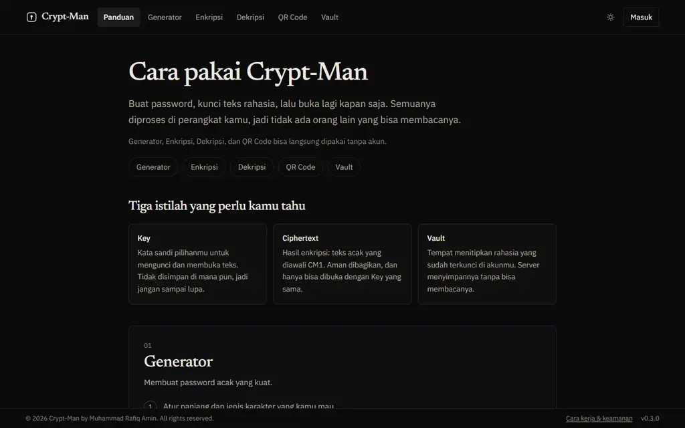

Crypt-Man Live
Pengelola kata sandi dengan kriptografi sepenuhnya di browser; generator, enkripsi, dekripsi, dan QR code bisa dipakai tanpa akun.
- Masalah
- Menyimpan kata sandi di catatan atau chat berarti menitipkan plaintext ke pihak lain.
- Solusi
- Argon2id menurunkan kunci, AES-256-GCM mengenkripsi di Web Worker; server hanya menerima ciphertext. 610 tes unit dan integrasi, 82 tes E2E.
- Hasil
- Live di crypt.amincloud.id sejak 13 September 2026 di server saya sendiri. Lighthouse 94/100/100.
